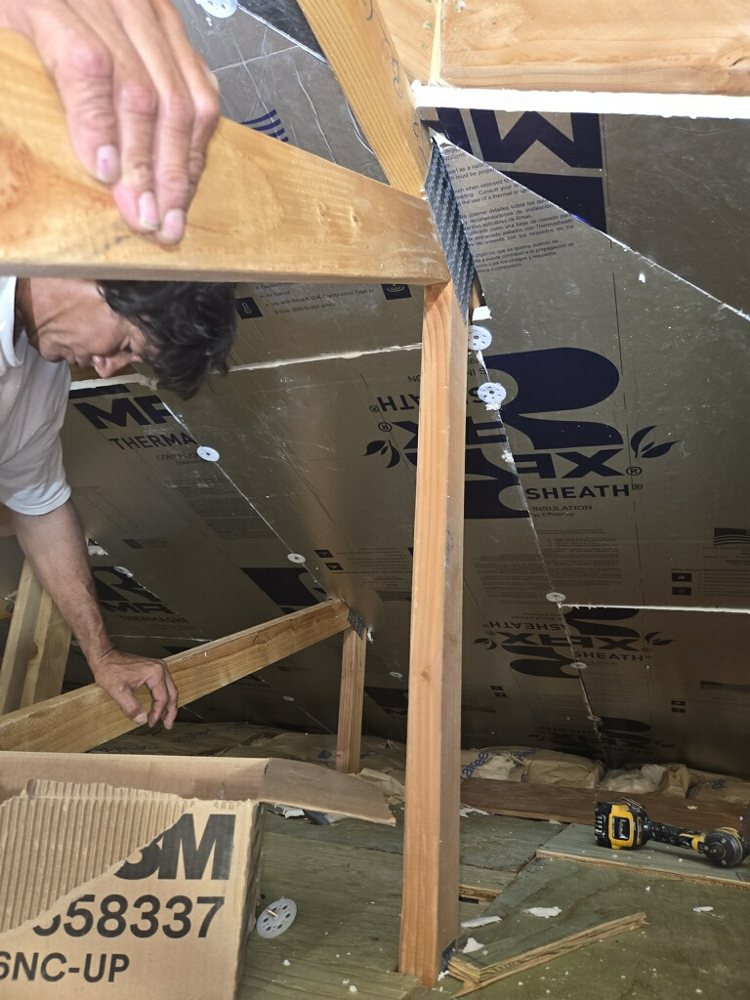

Water damage drywall repair and restoration for Kaneohe homes on Oahu's Windward side.
Kaneohe receives more rainfall than almost anywhere else on Oahu, making moisture intrusion and water damage a recurring issue for homeowners throughout the area. H Drywall, LLC has deep experience identifying and repairing moisture-damaged drywall in Kaneohe homes, delivering clean results that hold up over time.



H Drywall, LLC serves Kaneohe homeowners and property managers with water damage repairs, drywall replacement and the full range of finishing services.
Holes, cracks, dents and damaged corners repaired so walls look like nothing happened.
Wet or mold-prone drywall removed and replaced after roof leaks, plumbing failures or persistent moisture.
Cracks, stains, sagging areas and access cuts repaired and retextured to match.
Knockdown, orange peel and custom textures matched so repairs blend once painted.
Skim coat, repairs and Level 4 or 5 finish so your painter starts on a clean surface.
Straight, clean hanging and finishing for additions, remodels and newly framed spaces.
In Kaneohe's wet climate, surface-only drywall repairs often fail because the underlying issue — a slow roof leak, condensation from AC units or improperly flashed windows — continues after the patch. H Drywall, LLC assesses the source of moisture, coordinates with the homeowner on the fix, then replaces damaged material and finishes to a clean surface.
Beyond water damage, Kaneohe homeowners rely on H Drywall, LLC for standard repairs, painting prep and renovation drywall throughout the area. Whether your project is in Kaneohe town, Heeia, Kahaluu or Hakipu'u, we serve the whole Kaneohe district. Call for a free estimate.
Share a few details about your project and we will follow up with timing and a clear estimate.